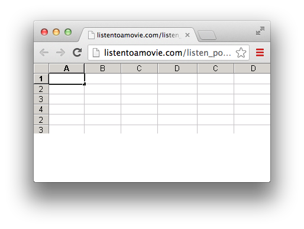

This is a students response to a class assignment, “Make a Gif about the ‘Robot Freedom Movement”.
I thought it was especially creative, as it was a Gif that took over the entire screen the moment you moved the mouse. Many others in the class depicted a physical robot, however this student was thinking outside the box. Maybe the Robot Freedom Movement is Viral! The image you see that spans the whole browser window, blinks, changes colors, and moves rapidly across the screen. When you refresh the page, it returns to normal size.
The Skimm is a really fresh, new way to get the news. It's quick, it's up-to-date, and it's easy to understand. Plus, it's FUNNY! It was started by two young women after graduation. Subscribers are e-mailed daily updates about what's going on in the world. They follow lots of big events. These two ladies stay up late the night before, and compose their Skimm. It's short, and it gets to the point! Their Skimms also link to other NYT articles, etc., in case you'd like to read more.
This is a quote from "Humans of New York"
"My name is Brandon and I began Humans of New York in the summer of 2010. HONY resulted from an idea that I had to construct a photographic census of New York City. I thought it would be really cool to create an exhaustive catalogue of the city’s inhabitants, so I set out to photograph 10,000 New Yorkers and plot their photos on a map. I worked for several months with this goal in mind. But somewhere along the way, HONY began to take on a much different character. I started collecting quotes and short stories from the people I met, and began including these snippets alongside the photographs. Taken together, these portraits and captions became the subject of a vibrant blog, which over the past two years has gained a large daily following. With nearly one million collective followers on Facebook and Tumblr, HONY now provides a worldwide audience with glimpses into the lives of strangers in New York City."
500 PX is a photo sharing website for high quality images shot by professional photographers. Viewers can go to this website to view photos and comment on the work of others. It's unique as one rarely sees amature work. I've enjoyed the striking images I've seen thus far. In my opinion, this site is really in the cutting edge on design by utilizing full bleeds.
"Rap Genius is your guide to the meaning of rap, R&B, and soul lyrics. You can listen to songs, read their lyrics, and click lines that interest you for pop-up annotations – we have thousands of canonical rap songs annotated. From the legendary 2Pac, Notorious B.I.G., and Jay-Z, to new stars like Vic Mensa and Lil B, we’ve got you covereed."
Moviebarcode has had a presence on Tumblr for a while now, but I've just discovered it. Each frame from a movie is isolated, and then skewed it to be only a pixel wide. They are then lengthened and aligned, creating a barcode-like image of the entire film. The image pictured here is the animated Disney film Bambi. Live-action features often don't rely as heavily on color, but animated films carefully plan their color scripts. Color can set the mood, intensify the drama or action, clarify with contrast, and even define a character.
The UK vogue website has a fun little Easter Egg. One of the most famous cheat codes in video game history is the Konami Code (a.k.a. Contra Code). If one goes to the vogue website and enters the Konami Code, dinosaurs will appear along the bottom of the screen. Give it a try for yourself: up, up, down, down, left, right, left, right, B, A. Continue to hit the A key and dinosaurs will continue to appear wearing fun and festive chapeaus. Raptors: licensed to carry small arms.
You ever come across a song so catchy that you feel like you could listen to it forever? Of course you have; who hasn't? Well, lucky for you, now you can! The infinite jukebox analyzes songs and finds parts that match up so similarly that it can seamlessly jump to another part of the song, allowing the song so seemingly loop infinitely. The website comes with a list of songs already available to listen to for as long as you'd like, or you can provide it with a song of your choosing. Now quite literally... This is the song that never ends; it just goes on and on my friends...
Having a bit of trouble coming up with a new facebook status? Are you a huge proponent of recycling? Then have I got the website for you! Give what-would-i-say.com access to your facebook and it will go through your old posts and piece together a new status for you. You can then choose to either post it to facebook, or have it generate another. This does create a good deal of gibberish and Frankenstati, but it does also hit solid comedic gold. Keep generating new statuses and you will laugh until you cry. Warning: slightly addictive.
You shelled out an arm and a leg on your ticket, jumbo junior mints, 5 gallon tub o' popcorn, and 138oz cherry coke. Halfway through your soda suddenly your bladder sends out a distress signals to your brain and you're left wondering what you'd miss if you ran to the bathroom now. If only there were a way to know the best time to make your mad dash for relief and how long you have to make it back without missing that epic scene you've been dying to see. Lucky for you (and your poor bladder) runpee.com exists to tell you just that, and even fill you in on what little you'll miss. What a relief!
Sometimes in life we are faced with important philosophical quandaries. Whether you are venturing into a new and unfamiliar place, you just want to try someplace new, or you are wondering how in the world this group of people ever managed to become such good friends when they can never fucking agree on anything?! It doesn't matter how you've gotten here, but now you're asking the tough question: Where the fuck should I go to eat?? Well, this site has the answer for you; simply enter your location and suddenly you have direction in your life. Now, if only there were a website out there to tell your wife what the fuck she should wear so you could actually make it to there sometime soon...
Need a little filler for your website? or your stomach?? Then bacon is the answer. Honestly, when isn't bacon the answer? Simply go to baconipsum.com and fill out the amount of text filler you need and click 'Give me bacon' and suddenly you have all the delicious meaty protein you could possibly ask for. The only down side, you can't taste computer bytes...
What is the best movie ever made, and why is it Die Hard? Sitting at your desk coding away at your latest webpage you are struck with the inevitable Die Hard craving. How could you possibly fill that void while not tipping off your fellow classmates? Simply navigate over to listentoamovie.com where they have a vast selection of movies that you can listen to while you work. Find the movie, tv show, comedian, etc. that you're in the mood for and give it a listen. Flip over to stealth mode and suddenly the webpage looks like a spreadsheet:
Nobody will ever know... Don't worry, your secret is safe with me.